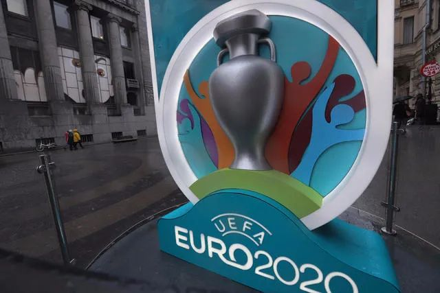
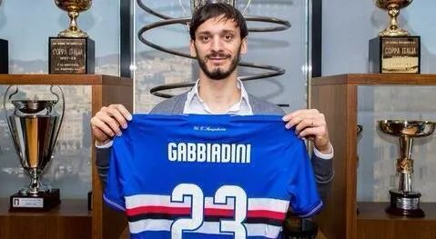
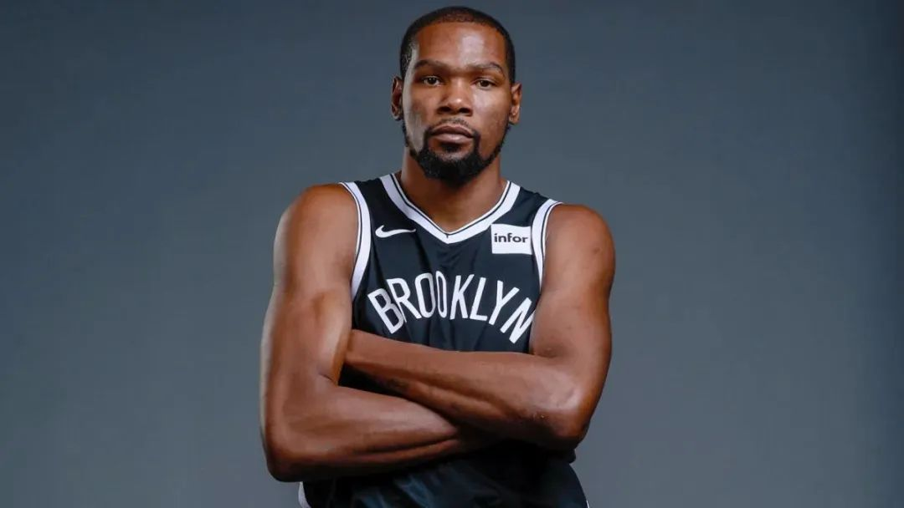
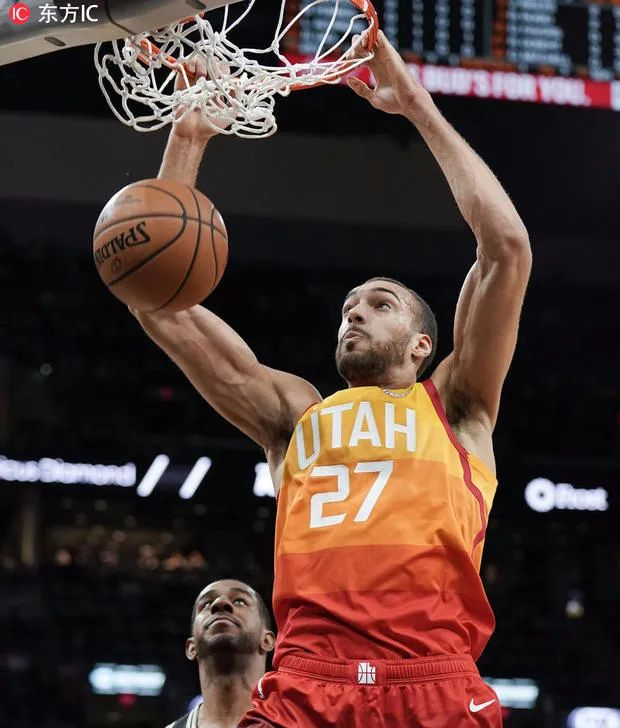
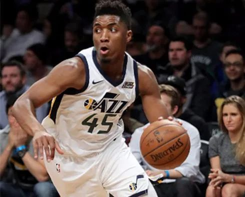
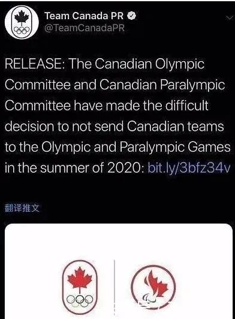

新冠病毒蔓延NBA，7支球队共计14名人员确诊
原文链接 备份链接 爵士中锋戈贝尔为NBA首个新冠病毒肺炎确诊病例。（图片来源：视觉中国） 记者：李晓庄 “ 截至目前，NBA共有7支球队14名人员确诊，猛龙和雷霆两支队伍宣布全队检测结果为阴性。 ” 自爵士中锋戈贝尔确诊感染新冠病毒之 …

人们意识到，即便身体“刚刚”的，如果防护意识和措施不到位，也难逃病毒的魔掌，这也许能让更多的民众正视疫情带来的威胁。
文 | 阿 晖
随着新冠肺炎疫情在全球的蔓延，向来以身体素质相比普通人更强而著称的体育界，也被疫情席卷。无国界的新冠病毒，让一大批人们耳熟能详的体育明星和名人也接连“中招”，给全球体育界带来的冲击波效应与震撼，并不亚于前不久NBA球星科比坠机身亡事件。人们意识到，即便身体“刚刚”的，如果防护意识和措施不到位，也难逃病毒的魔掌，这也许能让更多的民众正视疫情带来的威胁。
五大联赛停摆足球圈大面积感染
到目前为止，欧洲各级别的足球联赛都已经停摆，包括了享誉世界的五大联赛，而本来将在今年夏天举行的欧洲杯，也被欧足联正式宣布推迟到明年，足球迷们就此彻底陷入“粮荒”。

意丙球队皮亚内塞的球员金·乌多，2月27日被检测出新型冠状病毒呈阳性，成为欧洲足坛首例职业球员感染新冠病毒的案例。两天后，意大利媒体报道，包括金·乌多在内，皮亚内塞有3名球员和1名俱乐部工作人员的新型冠状病毒检测结果呈阳性。
前AC米兰后卫朱塞佩·法瓦利之子亚历山德罗·法瓦利，作为意丙联赛雷吉纳队的后卫，是意大利职业联赛第二名被确诊的球员。
3月6日，丹麦前国脚卡伦博格确认感染了新型冠状病毒，他是首位确认感染的前职业球员。3月11日，德乙球队汉诺威96官方宣布，球队后卫许伯斯新冠病毒确诊阳性，已经在家中进行自我隔离。之后汉诺威官宣，球员霍恩在新冠病毒检测中检测结果呈阳性，这是该队第二名确诊的球员。
如果这些低级别联赛球员还不太为人所知，那我们来说说欧洲顶级联赛名气比较响的确诊人物。
3月12日尤文图斯官方宣布，球队中后卫鲁加尼新冠病毒检测呈阳性，成五大联赛首例球员新冠确诊。在鲁加尼之后，马图伊迪和迪巴拉也被证实检查结果呈阳性。值得庆幸的是，球队当家球星C罗已经回到家乡葡萄牙马德拉自我隔离，经两次病毒检测，都是阴性。

尤文图斯后卫鲁加尼
在尤文图斯宣布鲁加尼确诊的当天，意甲桑普多利亚官方宣布，球队前锋加比亚迪尼新冠肺炎检测阳性。这是意甲第二例正式确诊的新冠肺炎。桑普多利亚在声明中表示：“加比亚迪尼有点发烧，但身体很好。俱乐部正在启动规定的所有隔离程序。”两天后，桑普多利亚再发公告，表示除加比亚迪尼之外，科莱、埃克达尔、拉古米纳以及托斯比这四名球员也已经确诊新冠病毒肺炎。

桑普多利亚前锋加比亚迪尼
还是3月12日，英超官方和阿森纳俱乐部发布公告，阿森纳主帅阿尔特塔确诊新冠肺炎。切尔西也官方宣布，球队攻击手20岁小将奥多伊确诊患染新冠病毒。奥多伊在当地时间9日早上就出现了类似于轻度感冒的症状，作为预防措施，奥多伊那时起就没有再出现在训练场上。在此之前，英冠球队诺丁汉森林老板埃文杰洛斯·马里纳基斯已经于3月10日在社交媒体上确认，自己已感染新型冠状病毒，马里纳基斯同时也是希腊球队奥林匹亚科斯老板。

切尔西小将奥多伊
阿森纳和切尔西这两则确诊公告，让英格兰赛会召开紧急会议，并宣布各级联赛暂停到4月3日。之后，陆续有伯恩茅斯、埃弗顿、沃特福德等俱乐部的队员和工作人员出现疑似症状。西甲劲旅瓦伦西亚更宣布约35%的雇员感染。
3月21日，意甲AC米兰俱乐部发布公告，证实俱乐部技术总监保罗·马尔蒂尼与他的儿子丹尼尔·马尔蒂尼确诊感染新冠病毒。作为AC米兰队史的传奇球星，保罗·马尔蒂尼本赛季回归球队管理层任职。AC米兰透露，保罗之前曾与一名患者接触，并出现了相关症状。

马尔蒂尼
同样是3月21日，“全村人的希望”——效力西甲西班牙人队的中国球星武磊感染新冠病毒的消息被刷了屏。当晚武磊在微博上用60秒视频回应了中国球迷的关切，表示自己3月11号就确诊感染了病毒，但只是轻症，一直在家中隔离，精神状态还是相当不错，总体上没有问题。

武磊
而在中超方面，山东鲁能官方前天宣布，鲁能外援费莱尼确认感染新冠肺炎，他也是中超联赛中首位确诊的球员。费莱尼于3月20日抵达济南，3月21日核酸检测呈阳性，属于无症状感染者。费莱尼在个人社交媒体上表示自己正在医院接受治疗，目前一切都很好。他的老东家、英超豪门曼联也通过社交媒体为比利时人送上了祝福。

费莱尼的社交媒体截图
费莱尼的确诊，对许多召唤外援归队的中国俱乐部来说，也是一次警钟。计划在5月中开始的中超联赛很可能因此要延期更久。
NBA中断 篮球圈也未幸免
与大面积受到新冠病毒感染的足球圈相比，篮球圈似乎状况好一些，但也未能幸免。
据美国媒体报道，3月17日，NBA知名球星凯文·杜兰特证实，自己的新冠肺炎核酸检测呈阳性。杜兰特说，“每个人都很谨慎，照顾好自己并且隔离观察。我们会度过这一切的”。除杜兰特外，其所效力的布鲁克林篮网队还有其他3名球员的检测结果也呈阳性。

凯文·杜兰特
NBA首名被确诊的球员是爵士队球员戈贝尔。
3月12日，雷霆主场迎战爵士的NBA比赛刚要开始，现场突然宣布比赛中断，双方球员、教练、裁判均悉数退场。比赛被取消的原因，正是因为戈贝尔在赛前进行新冠检测时呈阳性。NBA之后正式宣布，2019-20赛季暂时停摆。

爵士球员戈贝尔
具有讽刺意味的是，在此前的采访中，戈贝尔曾在电视镜头下毫无忌惮地触摸队友物品，采访时摸话筒，表示自己不怕新冠病毒。因为戈贝尔的确诊，雷霆和爵士的全队工作人员、球员和教练都立即接受新冠检测。而过去10天与爵士交手过的5支球队：骑士、尼克斯、凯尔特人、活塞、猛龙，都将检测和自我隔离。
一天后，爵士队核心后卫多诺万·米切尔也被证实确诊感染上新冠病毒，这位23岁的全明星后卫，成为NBA联盟当中第二位被确诊的球员。此前，外界猜测穆迪埃也可能感染，但他随后在社交媒体上称自己的病毒检测为阴性。

爵士球员多诺万·米切尔
3月15日，活塞中锋克里斯蒂安·伍德新冠病毒检测结果为阳性，他也成为了联盟第三位确诊的球员，而在3月8日对阵爵士的比赛里，伍德曾与戈贝尔对位。
3月19日，洛杉矶湖人队通过官方社交媒体宣布，两名湖人球员新冠病毒检测呈阳性，接下来球队可能会对剩下的球员进行检测。此外，波士顿凯尔特人队也有一名球员确诊。

湖人队社交媒体截屏
环球网3月19日的报道称，据CNN介绍，目前至少有7名NBA球员感染了新冠病毒。
除了NBA，在欧洲，皇家马德里也宣布，有一名皇马篮球队队员在新冠病毒检测中呈阳性，经媒体报道，确诊的是美国球员特雷·汤普金斯。
疫情肆虐东京奥运会或将推迟
2月28日，伊朗媒体记者确认，一名女子五人制足球运动员因新型冠状病毒去世。据悉，这名女球员叫做埃尔汗·舍伊克希，今年才只有23岁，她也是世界足坛首位因新冠肺炎去世的病例。

**伊朗女球员埃尔汗·舍伊克希
**
3月22日，曾于1995-2000年担任皇马主席的洛伦佐·桑斯因新冠肺炎去世，享年76岁。1998年，老桑斯治下的皇马时隔32年重夺欧冠，2年后，他的球队又在决赛中击败瓦伦西亚，再次捧得欧冠。
新冠病毒疫情的肆虐，已经对体育界人士的生命安全造成了巨大威胁，让国际体坛陷入了不确定迷雾之中，由此也带来巨大的损失。除了欧洲足球联赛暂停、北美四大职业体育联盟——美国职业橄榄球大联盟NFL、美国职业棒球大联盟（MLB）、美国职业篮球联赛（NBA）和国家冰球联盟（NHL）也全都陷入停摆状态。在欧洲杯宣布延期一年后，南美洲足联也决定将原定于今年6月至7月举行的第47届美洲杯赛推迟至2021年举行。
原本将是今年全球体育盛会的2020年东京奥运会也受到重创，前途未卜。
就在昨天，加拿大奥委会宣布，将不会派代表队参加2020年东京奥运会，这也是首支宣布退出东京奥运会的国家队。随后，澳大利亚也宣布不参赛。

加拿大的退奥声明
国际奥委会主席巴赫致信全体运动员：“人的生命高于一切，包括举办奥运会。”但他明确表示不会取消东京奥运会，他说：“无论这条黑暗的隧道有多长，我们都会一起走过，奥运圣火就是隧道尽头的光。”
此前以安倍为首的日本政府一直坚持按既定日期，完整办奥运的计划。但据NHK电视台报道，安倍晋三昨天在参议院会议上表示，如果无法以完整形式举办奥运会，可能不得不推迟举办。
这真是体育界的灾难啊！


· 口述实录 | 中国援外抗疫包机MU7041机长：加油，意大利！请照顾好我们的医生
· 我在海外 | 美国社区还基本正常，我不回去给中国造成负担
新民周刊所有平台稿件， 未经正式授权
一律不得转载、出版、改编或进行
与新民周刊版权相关的其他行为，违者必究


原文链接 备份链接 爵士中锋戈贝尔为NBA首个新冠病毒肺炎确诊病例。（图片来源：视觉中国） 记者：李晓庄 “ 截至目前，NBA共有7支球队14名人员确诊，猛龙和雷霆两支队伍宣布全队检测结果为阴性。 ” 自爵士中锋戈贝尔确诊感染新冠病毒之 …
原文链接 备份链接 体坛周报特约记者吴家驹华盛顿报道 2月3日，在通道找比尔为中国录祝福的自己，完全不会想到：37天后的NBA，会因为疫情而停摆。也想不到自己短暂的生涯，可能会以这种方式结束。 全球第一例感染者至今无从考证，进入2020年 …
原文链接 备份链接 图片来源：视觉中国 “ NBA已经提醒各球队需要准备应急预案——仅在必要人员在场的情况下进行比赛。 ” 虎扑篮球3月7日消息，据NBA记者Shams Charania报道，消息人士透露，联盟已经向各支球队发放了备忘录， …
原文链接 备份链接 3 月 4 日，武汉市多家方舱医院收到紧急通知，暂停办理病人出院，对于出院的新冠患者施行更加严格的检测标准和审核流程，第二天就要正式开始落实。此前，有的方舱医院每天有 30、40 名患者出院。 据澎湃、界面等多方报 …
原文链接 备份链接 出院并不等于彻底痊愈 2月27日，已经出院19天的徐州居民王先生核酸检测呈阳性，被再次收入定点医院医学观察。 王先生在2月9日出院，经过14天隔离点观察后回家。回家后三天，王先生在新闻上看到部分康复者复检呈阳性，主 …